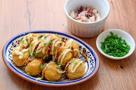

Restaurante "Kyoshin"

Takoyakis (Bolas de pulpo)

Preparación:
- Mezcla harina, huevos y dashi hasta obtener una masa líquida sin grumos.
- Calienta la plancha de takoyakis y engrasa bien cada hueco.
- Vierte la masa llenando las cavidades por completo.
- Añade pulpo, cebolleta y jengibre en cada bola.
- Cuando los bordes cuajen, gira las bolas 90 grados metiendo el exceso dentro.
- Sigue girando hasta que estén doradas y redondas.
- Saca del fuego y coloca en un plato alargado.
- Salsea con takoyaki y mayonesa. Decora con katsuobushi y aonori.